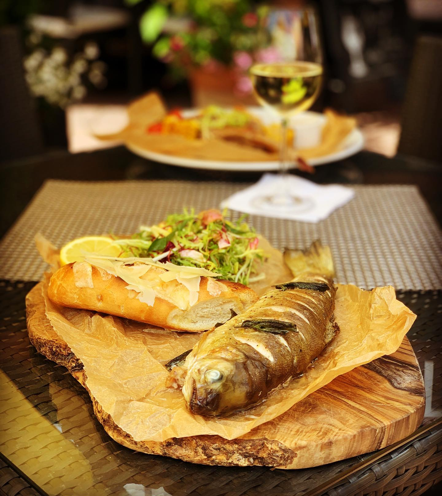

Pečený pstruh na masle podľa @hoteldaro — Normy Jedál
“Pečený pstruh na podmaslí, šalát s bylinkami, cesnaková bageta so syrom Grana Padano” ... ochutnajte slnečný júl na Hoteli DARO 😋🌞🤙 #summerfood #summervibes #healthyfood #zdravoachutne #pecenypstruhnamasle #banskastiavnica #hodrusahamre #hoteldaro